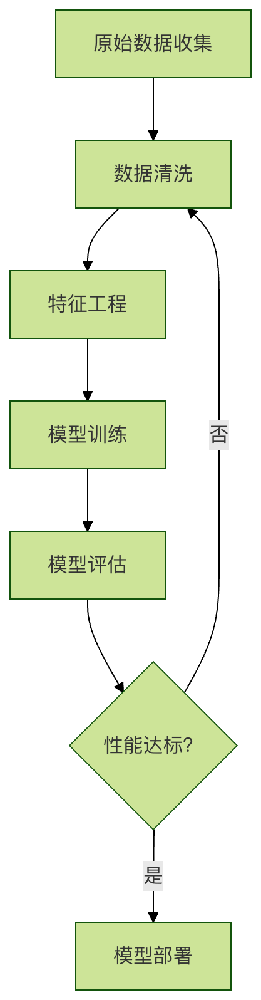

データクリーニング
機械学習ではよく「ゴミを入れればゴミが出る」という言葉を耳にします。この言葉は、データ品質がモデル性能に決定的な影響を与えることを如実に表しています。
想像してみてください。あなたは一流のシェフで、美味しい料理を作ろうとしています。どれほど腕前が優れていても、食材が新鮮でなかったり、泥が付いていたり、欠けていたりすれば、最終的に出来上がる料理は必ず大幅に質が落ちるでしょう。
機械学習において、生データは私たちの「食材」であり、データクリーニングは、その極めて重要な「下ごしらえ」のプロセスです。データ内のエラー、不整合、重複、不完全な部分を特定し、修正または除去することで、その後のモデル「調理」に備えて、クリーンで高品質な「食材」を準備することを目的としています。
本記事では、データクリーニングの中核概念と一般的な手法を体系的に理解し、明確なコード例を通して、データサイエンティストに必須のこのスキルを習得できるようにします。
一、データクリーニングが重要なのはなぜか？
技術的な詳細に入る前に、データクリーニングが機械学習プロセスに不可欠な理由を理解しましょう。
1.1 モデルの性能と精度の向上
汚れたデータ（異常値、誤った値など）は、モデルが誤ったパターンを学習する原因になります。クリーニング後のクリーンなデータは、モデルがデータ内の真のパターンをより正確に捉え、より信頼性の高い予測を行えるようにします。
1.2 分析結果の信頼性の確保
探索的データ分析であれ最終的なビジネス上の意思決定であれ、誤ったデータに基づいて導き出された結論は危険です。データクリーニングは、分析基盤の堅牢性と信頼性を保証します。
1.3 アルゴリズムの安定性の向上
多くの機械学習アルゴリズムはデータ品質に非常に敏感です。例えば、距離ベースのアルゴリズム（KNN、SVMなど）は異常値の影響を強く受け、欠損値があるとサンプル全体が使用できなくなる可能性があります。
1.4 計算リソースと時間の節約
無関係なデータや重複データをクリーニングすることでデータセットのサイズを減らし、モデルトレーニングの計算コストと時間を削減できます。
機械学習全体のプロセスにおけるデータクリーニングの位置付けをより直感的に理解するために、以下のフローチャートを見てください。

上の図からわかるように、データクリーニングは前処理の最初のステップであり、モデルの性能が悪い場合には、しばしばこのステップに戻ってデータ品質を確認し改善する必要があります。
二、よくあるデータ問題とクリーニング戦略
データクリーニングは通常、以下のようないくつかの一般的な問題を対象とします。簡単な表で素早く把握しましょう。
| 問題の種類 | 説明 | 起こり得る影響 | 一般的なクリーニング戦略 |
|---|---|---|---|
| 欠損値 | データレコードの一部のフィールドの値が空（NaN、NULL）である。 | サンプルが破棄されたり、情報が失われたり、計算エラーが発生する。 | 削除、補完（平均値/中央値/最頻値/予測値）。 |
| 異常値 | 大多数のデータから明らかに外れた極端な値。 | 統計結果を歪め、モデルの性能に影響を与える。 | IQR、Zスコアで特定した後に削除または修正する。 |
| 重複値 | データセット内に完全に同一のレコードが存在する。 | モデルが重複サンプルに過度に偏り、汎化性能に影響を与える。 | 重複を特定して削除する。 |
| 不整合性 | データの形式、単位、またはエンコーディングが統一されていない（例：「男」、「Male」、「M」）。 | グループ化や分析のエラーを引き起こす。 | 標準化、正規化、マッピング変換。 |
| 誤った値 | 明らかに論理に反する値（例：年齢が-1や300歳など）。 | 意味のない分析結果を生み出す。 | ビジネスロジックに基づいて修正するか、欠損として扱う。 |
次に、Pythonのpandasとnumpyライブラリを使用して、具体的なコードでこれらの問題を解決する方法を紹介します。
三、実践：Pythonを使ったデータクリーニング
という名前のcustomer_data.csv顧客データセットがあるとします。それには典型的なデータ品質の問題がいくつか含まれています。
3.1 環境準備とデータの読み込み
まず、必要なライブラリがインストールされていることを確認してから、データを読み込みます。
例
import pandas as pd
import numpy as np
# 加载数据集
df = pd.read_csv('customer_data.csv') # あなたのファイルパスに置き換えてください
# データの基本情報と最初の数行を確認する
print("数据集形状（行，列）:", df.shape)
print("\n数据前5行：")
print(df.head())
print("\n数据基本信息：")
print(df.info())
print("\n数据统计描述：")
print(df.describe())
3.2 欠損値の処理
欠損値を発見することが最初のステップです。pandas便利な方法を提供しています。
例
print("各列缺失值数量：")
print(df.isnull().sum())
# 2. 处理缺失值 - 方法一：删除
# 欠損値を含むすべての行を削除する（欠損値が少ない場合に適用）
df_dropped = df.dropna()
print(f"\n删除缺失值后，数据形状: {df_dropped.shape}")
# 3. 处理缺失值 - 方法二：填充
# より一般的な方法は、列の特性に基づいて補完することです。
df_filled = df.copy()
# 数値型の列（例：'年齢'）については、中央値で埋める（平均値よりも外れ値の影響を受けにくい）
if '年龄' in df_filled.columns:
df_filled['年龄'].fillna(df_filled['年龄'].median(), inplace=True)
# カテゴリ列（例：「都市」）は、最頻値（最も頻繁に出現する値）で補完する
if '城市' in df_filled.columns:
df_filled['城市'].fillna(df_filled['城市'].mode()[0], inplace=True)
# 時間とともに変化する可能性のある列（例：'前回の消費金額'）については、0で埋める方がビジネス上意味がある場合もあります。
if '上次消费金额' in df_filled.columns:
df_filled['上次消费金额'].fillna(0, inplace=True)
print("\n填充缺失值后，各列缺失值数量：")
print(df_filled.isnull().sum())
3.3 異常値の検出と処理
異常値の処理には注意が必要です。なぜなら、異常値が重要な特別なイベントを表している場合があるからです。
例
if '年收入' in df_filled.columns:
# 方法一：使用四分位距（IQR）法识别
Q1 = df_filled['年收入'].quantile(0.25)
Q3 = df_filled['年收入'].quantile(0.75)
IQR = Q3 - Q1
lower_bound = Q1 - 1.5 * IQR
upper_bound = Q3 + 1.5 * IQR
# 找出异常值
outliers = df_filled[(df_filled['年收入'] < lower_bound) | (df_filled['年收入'] > upper_bound)]
print(f"\nIQR法で検出された'年収'の外れ値の数: {len(outliers)}")
# 外れ値の処理：ここでは上下の境界値で切り詰める（Winsorization）を選択します。
df_filled['年收入'] = np.where(df_filled['年收入'] > upper_bound, upper_bound,
np.where(df_filled['年收入'] < lower_bound, lower_bound, df_filled['年收入']))
print("「年収」の外れ値を切り詰め処理しました。")
3.4 重複値の処理
重複したレコードは計算負荷を増加させ、偏りをもたらす可能性があります。
例
duplicate_rows = df_filled.duplicated()
print(f"\n完全に重複する行数: {duplicate_rows.sum()}")
# 重複する行を削除し、最初に出現したレコードのみを保持する
df_cleaned = df_filled.drop_duplicates()
print(f"删除重复值后，数据形状: {df_cleaned.shape}")
3.5 不整合性の処理
データ形式と値の統一を確保します。
例
if '城市' in df_cleaned.columns:
df_cleaned['城市'] = df_cleaned['城市'].str.title()
# 2. 値をマッピングして統一する：例えば、性別情報を「男」と「女」に統一する
if '性别' in df_cleaned.columns:
gender_mapping = {'male': '男', 'female': '女', 'M': '男', 'F': '女'}
df_cleaned['性别'] = df_cleaned['性别'].replace(gender_mapping)
# .map() 関数を使用することもできますが、.replace() の方がより柔軟で、未指定の値はそのまま保持されます
# 3. データ型の変換：数値列が数値型であることを確認してください
if '年龄' in df_cleaned.columns:
df_cleaned['年齢'] = pd.to_numeric(df_cleaned['年齢'], errors='coerce') # errors='coerce' はエラーをNaNに変換します
# 変換後、変換で生じた新しいNaNは中央値で再び埋めることができます
df_cleaned['年齢'].fillna(df_cleaned['年齢'].median(), inplace=True)
print("\nデータクリーニング完了！クリーニング後のデータの先頭5行を表示：")
print(df_cleaned.head())
四、まとめとベストプラクティス
上記の手順により、基本的なデータクリーニングを一通り完了しました。データクリーニングは一度きりのステップではなく、反復的なプロセスであることを忘れないでください。以下にいくつかのベストプラクティスを示します：
- 先に探索、後にクリーニング：クリーニングを始める前に、必ず
df.describe()、df.info()、可視化（ヒストグラム、箱ひげ図など）などの手段を用いてデータを十分に理解してください。 - 元データのバックアップ：元の未変更のデータコピーを常に保持してください。すべてのクリーニング操作はコピー上で行うべきです。
- クリーニング手順を記録する：クリーニングのロジック（なぜ中央値で埋めたのか、異常値の境界をどのように決定したかなど）を記録してください。これはプロジェクトの再現性とチーム協力にとって非常に重要です。
- ビジネスロジックを考慮する：データクリーニングは純粋な数学的操作ではありません。例えば、「年齢=0」は人口統計データではエラーですが、乳幼児向け製品データでは合理的かもしれません。常にドメイン専門家とコミュニケーションを取りましょう。
- 反復的に進める：クリーニング後、モデリング段階に進みます。モデルの性能が良くない場合は、データ品質を振り返って確認し、クリーニング戦略を調整する必要があるかもしれません。
データクリーニングはデータサイエンスプロジェクトの60%-80%時間を占めることがあり、面倒ではありますが、それは強力で信頼性の高い機械学習モデルを構築するための基盤です。
その他の拡張
クリックしてノートを共有
ノートはこの記事の内容の拡張である必要があります！
記事投稿は、ここをクリックしてください
登録招待コードの取得方法
ノートを共有する前に必ずログイン！
登録招待コードの取得方法